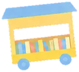
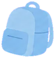

ホーム › 試験対策
いまの悩みに近いものを、押してみてね
試験日までの流れ
横に送れます →
公式の過去問：キャリアコンサルティング協議会JCDA
出典：キャリアコンサルティング協議会・JCDA「試験日程」「受験概要」（2026年11月16〜17日に確かめました）
勉強の道
①から順に。上で悩みを押すと、いまの場所に印がつきます。
はじめに
毎日すこしずつ

ことばに慣れたら
毎日＋週に1回

学科と並行して

試験まで1か月

横に送れます →
どこから手をつけるか迷ったら：合格までのロードマップをつくる（準備中）／月曜の朝の質問会
キャリコン学びピクニックで使えるもの
無料・登録なしいま使える
1問1答ドリル1,152問・まちがえた問題だけも解ける準備中これから始まるもの
 面接練習会
面接練習会
 合格までのロードマップをつくる
合格までのロードマップをつくる 試験直前3日プラン
試験直前3日プラン始まったら、このページでお知らせします。
気持ちがしんどい日は コラム（モヤンの中の人の連載）

いまは 試験対策の入口。次は